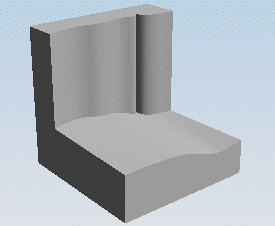
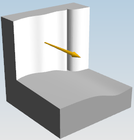
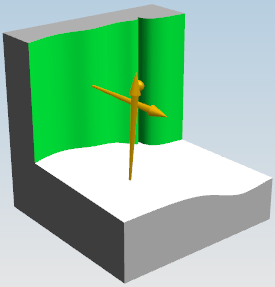

打开部件并开始扫掠截面面倒圆
-
打开 ffm2_face_blend_5。

-
点击特征工具条上的面倒圆
 。
。 -
在面倒圆对话框的类型列表中，确保选择的是两个定义面链。
-
在横截面组的截面方向列表中，选择扫掠截面。
-
在横截面组的形状列表中，选择圆形，并从半径方法列表中选择恒定。
-
在半径输入框中键入120。
-
在修剪和缝合选项组的圆角面列表中，选择修剪至所有输入面，并选中修剪输入面至圆角面
 以及缝合所有面 复选框。
以及缝合所有面 复选框。 -
当选择面链 1激活时，选择竖直面，并确保方向箭头背离实体。

-
当选择面链 2激活时，选择水平面，并确保矢量背离实体。
记住，两个矢量都应该指向想要的圆角中心。

-
单击鼠标中键以完成选择。